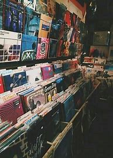
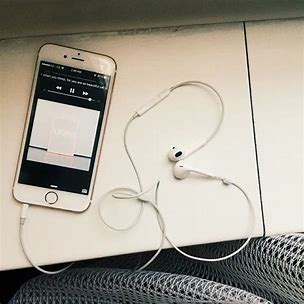
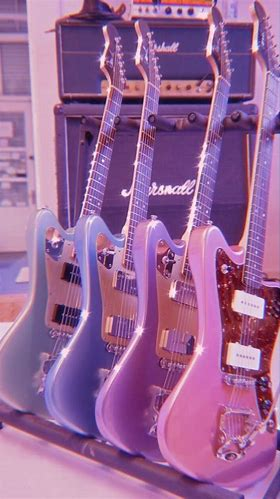

What You'll See
These pages are filled with singers and musicians that are all in my playlist. It's all about my take on their music and pictures that showcase an album they've published (and in my opinion...they all publish good albums). So, if you're still curious after that, I hope my lists will find you some new artists along the way!
See More...You're Still On This Page?
If you're reading this you must like interviews. And if that's the case, you'll be glad you stuck around here! Because the link below can send you to the page where I talk EVEN MORE about the range of artists listed on this website.
See More...You Just Won't Leave Home Huh?
Look, if you're so interested in what I got to spill about my own biases, then you're in luck. There's yet another peice in this place all about how I feel towards these talented people! Go see the Top 3..well..in my opinion.
See More...